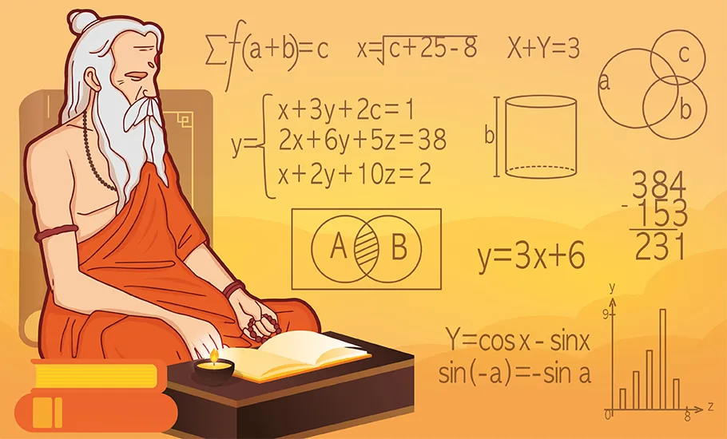

Hands-on learning
Abacus training
Build a foundation in numbers, then work towards mental arithmetic.
Explore the programAbacus classes in Hyderabad and online that make numbers feel less daunting and more exciting. Help your child take the next step in their maths journey.
Hands-on practice · Step-by-step learning · A brighter start

Build a foundation in numbers, then work towards mental arithmetic.
Explore the program
Explore practical calculation strategies for multiplication, division and more.
Explore the program
Discover patterns, follow a solving method and practise step by step.
Explore the program
Learning is easier to enjoy when a child has a clear next step. Our programs bring together hands-on tools, guided exercises and regular practice.
Join offline abacus classes at our Vidya Nagar centre in Hyderabad. Explore hands-on learning with face-to-face guidance.
204 C Block, Vaidehi Nivas, Golden Palms, Achyuta Reddy Marg, Vidya Nagar, Hyderabad, Telangana 500044
Explore Hyderabad classes ↗Choose online abacus learning when travelling to the centre does not fit your routine. Ask us about available online batches and learning materials.
A learning space, an abacus and an internet connection.
Explore online abacus ↗Tell us your child’s age, interests and familiarity with numbers.
Discuss programs, available batches and online or Hyderabad classes.
Confirm the materials and next steps with the teacher, then start practising.
Yes. The Numbers Academy offers in-person abacus classes at 204 C Block, Vaidehi Nivas, Golden Palms, Achyuta Reddy Marg, Vidya Nagar, Hyderabad, Telangana 500044. Contact us before visiting to confirm batch availability.
Online abacus classes are available. Contact the academy to discuss the current batches, how lessons are conducted and the materials your child will need.
Students begin with number representation and addition and subtraction on an abacus, then progress to multi-digit calculations and mental arithmetic practice. The starting level depends on the learner’s current skills.
Please contact the teacher for current fees, batch timings and availability. These may vary by program, level and whether you choose online or in-person learning.
Share your child’s age, familiarity with arithmetic and learning goals with us. We can explain the differences between abacus, Vedic Maths and Rubik’s Cube training and discuss a suitable starting point.
Tell us about your child. We’ll help you explore the right program.